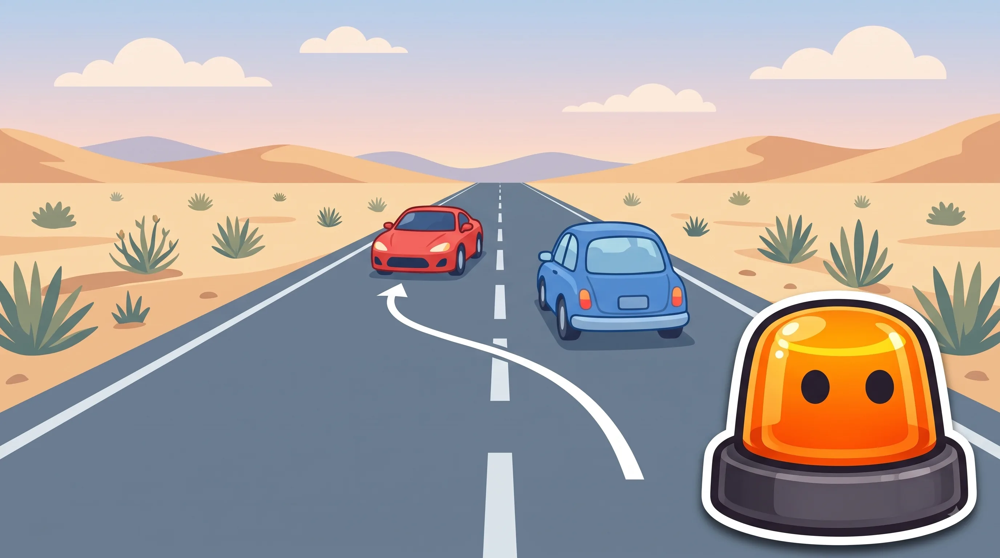
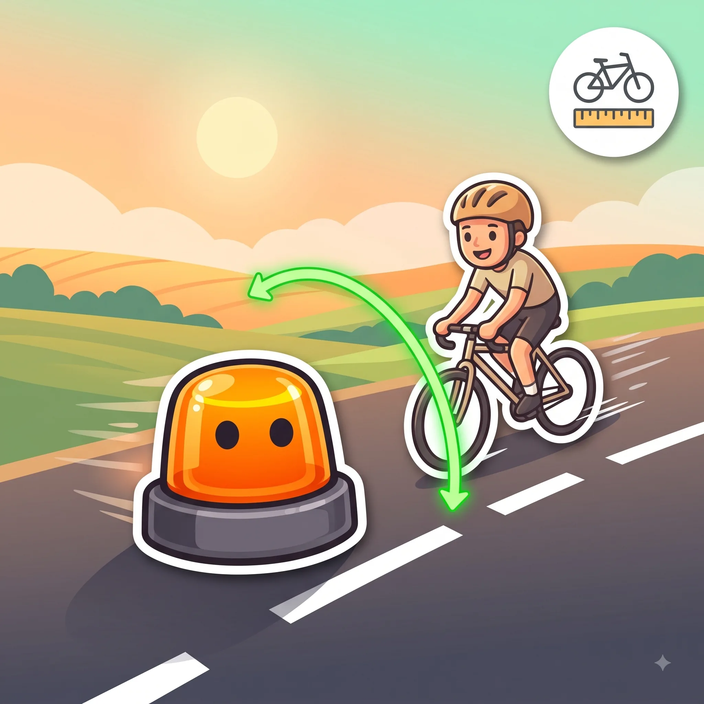

Adelantamientos
Cuándo, cómo y dónde se puede adelantar con seguridad.
Esquema
Con línea discontinua, visibilidad total del tramo y espacio de sobra para volver a tu carril.


La señal o la marca vial ya te lo dicen directamente: no se adelanta.


Aunque no haya ninguna señal, el propio lugar ya prohíbe adelantar.


Adelantar a un ciclista: los dos requisitos
Separación lateral
Mínimo 1,5 metros, en cualquier vía
Cambio de carril
Con 2+ carriles por sentido, ocupa el otro entero
| Vía de un carril por sentido | Vía de 2+ carriles por sentido | |
|---|---|---|
| ¿Puedes invadir el sentido contrario? | Sí, si hay visibilidad y espacio | No hace falta: usa el otro carril |
| Distancia lateral mínima | 1,5 metros | 1,5 metros |
| Qué exige la norma además | Reducir la velocidad con margen | Cambiar de carril por completo |
Trucos para no olvidarlo
Al ciclista, 1,5 metros o no adelantas.
Es la separación lateral mínima obligatoria en cualquier vía, aunque tengas que invadir parcialmente el carril contrario.
Si no ves el final, no adelantas.
Curvas, cambios de rasante, niebla o lluvia intensa: sin visibilidad total del tramo libre, la maniobra queda prohibida.
Desde octubre de 2026, también cuenta la velocidad.
Al adelantar a un vehículo parado o a uno o varios ciclistas, la norma exige además reducir la velocidad al menos 20 km/h por debajo del límite de la vía.
Confusiones típicas

Ponte a prueba
Otros temas
Señales verticales
La forma y el color ya te dicen el mensaje antes de leer nada.
Velocidad y distancias de seguridad
A más velocidad, la frenada crece mucho más rápido que la reacción.
Señales horizontales y marcas viales
Líneas, flechas y símbolos pintados en el asfalto, con su propio código.
Normas generales de circulación
Las reglas base que deciden por ti cuando no hay ninguna señal.
Intersecciones y prioridad de paso
Quién pasa primero en cruces y glorietas.
Autopistas y autovías
Incorporaciones, carriles y normas específicas de vías rápidas.
Alcohol, drogas y fatiga
Tasas máximas y por qué te la juegas más de lo que crees.
El vehículo: mantenimiento y elementos de seguridad
Lo mínimo que debes revisar antes de coger el coche.
Accidentes: actuación y primeros auxilios
Proteger, avisar y socorrer, en ese orden.
Sanciones y puntos del carnet
Cómo funciona el sistema de puntos y qué te los quita.
Casos especiales: ciclistas, peatones, animales y meteorología
Las situaciones que no siguen la norma "de manual".